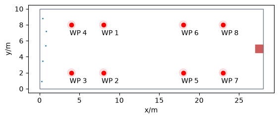

Leader–Follower Dynamics with Direct Steering#
This notebook can be directly downloaded here to run it locally.
It demonstrates the use of direct steering of agents.
An agent (leader) embarks on a journey defined by specific waypoints and a final destination. Meanwhile, the remaining agents trail behind, constantly adjusting their course to align with the leader’s current position.
import pathlib
import random
import jupedsim as jps
import pedpy
from matplotlib.patches import Circle
from shapely import GeometryCollection, Point, Polygon
area = GeometryCollection(Polygon([(0, 0), (28, 0), (28, 10), (0, 10)]))
walkable_area = pedpy.WalkableArea(area.geoms[0])
Definition of Start Positions and Exit#
Now we define the spawning area and way points for the leader to follow.
num_agents = 5
spawning_area = Polygon([(0, 0), (2, 0), (2, 10), (0, 10)])
pos_in_spawning_area = jps.distributions.distribute_by_number(
polygon=spawning_area,
number_of_agents=num_agents,
distance_to_agents=0.8,
distance_to_polygon=0.15,
seed=1,
)
exit_area = Polygon([(27, 4.5), (28, 4.5), (28, 5.5), (27, 5.5)])
waypoints = [
(8, 8),
(8, 2),
(4, 2),
(4, 8),
(18, 2),
(18, 8),
(23, 2),
(23, 8),
]
distance_to_waypoints = 0.5

Specification of Parameters und Running the Simulation#
Now we choose the operational model and define the exit. Model-level parameters are set on the model instance passed to the simulation, while per-agent parameters are set when each agent is added.
trajectory_file = "output.sqlite" # output file
simulation = jps.Simulation(
model=jps.GeneralizedCentrifugalForceModel(
strength_neighbor_repulsion=0.3,
max_neighbor_interaction_distance=2,
max_neighbor_interpolation_distance=0.1,
max_neighbor_repulsion_force=10,
max_geometry_repulsion_force=3,
),
geometry=area,
trajectory_writer=jps.SqliteTrajectoryWriter(
output_file=pathlib.Path(trajectory_file)
),
)
exit_id = simulation.add_exit_stage(exit_area.exterior.coords[:-1])
Define Journey for leader#
waypoint_ids = [
simulation.add_waypoint_stage(waypoint, distance_to_waypoints)
for waypoint in waypoints
]
journey_leader = jps.JourneyDescription([*waypoint_ids, exit_id])
for i, waypoint_id in enumerate(waypoint_ids):
journey_leader.set_transition_for_stage(
waypoint_id,
jps.Transition.create_fixed_transition(
waypoint_ids[i + 1] if i + 1 < len(waypoint_ids) else exit_id
),
)
journey_id = simulation.add_journey(journey_leader)
Define Journey for followers#
direct_steering_stage = simulation.add_direct_steering_stage()
direct_steering_journey = jps.JourneyDescription([direct_steering_stage])
direct_steering_journey_id = simulation.add_journey(direct_steering_journey)
Add agents#
First, add leader, then its followers.
leader_id = simulation.add_agent(
journey_id=journey_id,
stage_id=waypoint_ids[0],
position=pos_in_spawning_area[0],
state=jps.GeneralizedCentrifugalForceModelState(
desired_speed=1.0,
b_min=0.1,
b_max=0.2,
a_min=0.1,
a_v=0.2,
orientation=(1, 0),
),
)
# Followers
followers_ids = set(
[
simulation.add_agent(
journey_id=direct_steering_journey_id,
stage_id=direct_steering_stage,
position=pos,
state=jps.GeneralizedCentrifugalForceModelState(
desired_speed=0.8,
b_min=0.1,
b_max=0.2,
a_min=0.1,
a_v=0.2,
orientation=(1, 0),
),
)
for pos in pos_in_spawning_area[1:]
]
)
Simulation loop#
while simulation.agent_count() > 0:
# Find leader's position
if leader_id in simulation.removed_agents():
leader_id = None
if leader_id:
position_leader = simulation.agent(leader_id).position
# Move followers towards leader
for agent in simulation.agents():
if agent.id == leader_id:
continue
# Define a target position near the leader with some randomness
near_leader = (
position_leader[0] + random.normalvariate(1, 0.1),
position_leader[1] + random.normalvariate(1, 0.1),
)
near_leader_point = Point(near_leader[0], near_leader[1])
# If the target position is inside the walkable area, set it as the agent's target
target = (
near_leader
if any(geom.contains(near_leader_point) for geom in area.geoms)
else position_leader
)
agent.final_target = target
# Check if the agent reached the exit and mark it for removal if so
if Point(agent.position).distance(exit_area.centroid) < 1:
simulation.mark_agent_for_removal(agent.id)
simulation.iterate()
simulation._writer.close()
Visualization#
Let’s have a look at the visualization of the simulated trajectories:
from jupedsim.internal.notebook_utils import animate, read_sqlite_file
trajectory_data, walkable_area = read_sqlite_file(trajectory_file)
animate(trajectory_data, walkable_area, every_nth_frame=10)